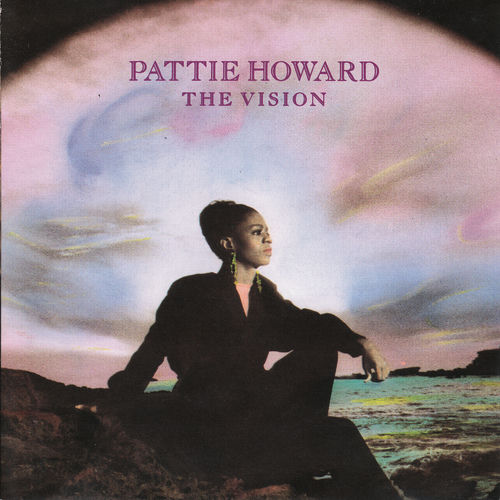

Pattie Howard
Pattie Howard is an American gospel and R&B Singer-Songwriter, Producer, Composer and Vocal Arranger. She is a Grammy nominated music industry veteran who has released two albums with major record labels, RCA Records and Light Records. Howard, who owns her own full service entertainment company, PH Balanced Music, is also known for singing background for many major artists including Whitney Houston, Gladys Knight, Brandy, Mary J Blige, Fantasia, Queen LaTifah, Madonna, Rick Astley, Andrae Crouch, Sandra Crouch, Michael Jackson, Curtis Stiger, Lisa Stansfield, BeBe and CeCe Winans, Reba Rambo, and Diana Ross. She has dozens of gold and platinum albums to her credits encompassing artists from almost every genre. Howard landed one of her most profound gigs traveling the world with Whitney Houston from 1992 to 2001, at the height of her career, The Bodyguard Era. During the early 2000s, Howard returned to songwriting, music production, mixing, and mastering and is currently singing, composing, arranging and producing various artists/bands. In 2016 Pattie released 2 singles through her record label PH Balanced Music. "Jesus Is His Name" introduces Pattie's daughter Shekinah Nicole Howard in a contemporary gospel duet produced by Wow Jones and co produced by Pattie Howard. The second single titled "Feel Me, Heal Me" was also Produced by Wow Jones, written and arranged by Pattie Howard. Pattie Howard is featured in the Nick Broomfield Documentary Whitney Houston "Can I Be Me".
Complete Discography & Tracklists (6)
2018 The Vision 🎵 10 Tracks
2018 If Snoop Can Do Gospel Then I Can Try To Rap 🎵 1 Tracks
2018 JIHN (Jesus Is His Name) 🎵 0 Tracks
No tracks registered.
2018 Jesus is His Name 🎵 0 Tracks
No tracks registered.